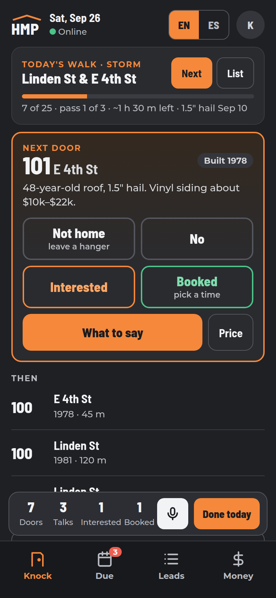
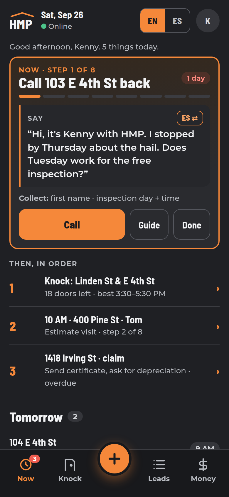
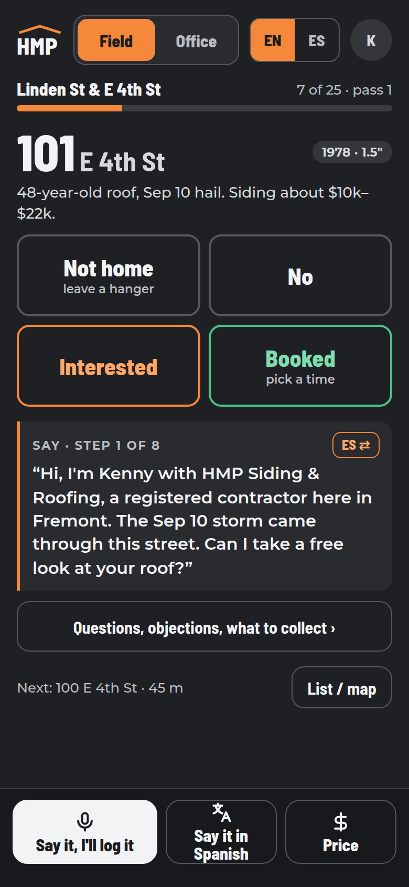

Recommendation: B · Next step
It does what you asked for: the app tells you what's next, what to say and what to collect, all day (O7's Sale Guide is the home screen). Borrow C's bigger door buttons for the Knock tab. If you want the smallest change first, A is a good stepping stone.
Option A
Walk first
Knock · Due · Leads · Money

Taps
Log a door1Sale Guide at a door1Add a lead2Quick price1Tomorrow's follow-ups1EN / ES1
- Best for: knocking days; opens right on the next house.
- Smallest change from today's app: quickest to build.
- Trade-off: the Sale Guide stays a side sheet, and the day's plan is split between Knock and Due. Translate: Right Hand → "How do I say…?" (2 taps).
Option B · recommended
Next step
Now · Knock · + · Leads · Money

Taps
Log a door1Sale Guide at a door1Add a lead2Quick price2Tomorrow's follow-ups0EN / ES1
- Best for: the "right hand": it always tells you the next move, with the Sale Guide's words already on it.
- One + button starts everything, including "Help me say it" (translation in 2 taps, plus ES ⇄ on every line).
- Trade-off: 5 tabs (the limit), the + opens a menu, and the "what's next" ranking has to be built. Medium work.
Option C
Field / Office
Field: one screen · Office: Plan · Leads · Money

Taps
Log a door1Sale Guide at a door0Add a lead1–3Quick price1Tomorrow's follow-ups1EN / ES1
- Best for: the street in gloves and low sun: huge buttons, nothing to hunt for, the words always on screen.
- "Say it in Spanish" is 1 tap on the bottom bar, always there.
- Trade-off: two modes to learn; office work hides behind the switch; the biggest rebuild.
All 3: tabs at the bottom (thumb reach), no AI-hub content, Boss view / Practice Door / Print / Prices under "K" (More), and legal notices always fixed English + Spanish text, never live-translated. Today's app: Today as 12 screens · audit.